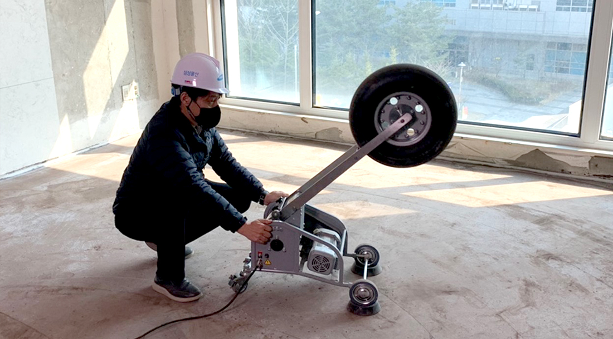
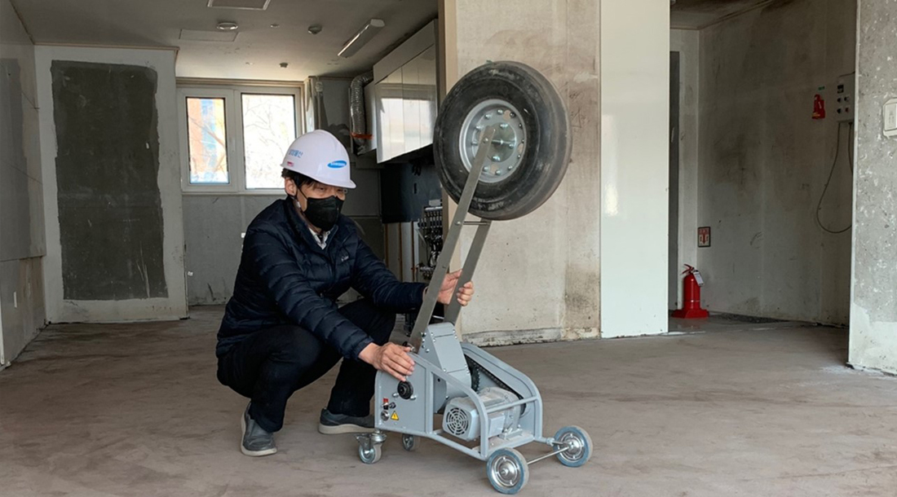

◇ 중량충격음 차단성능 1등급 기술 4개 국가공인시험기관 공식 인증
◇ 실험실 측정값이 아닌 실제 현장 실증을 통해 성능 확인
◇ "이르면 올 하반기부터 신규 프로젝트에 개발 기술 적용해 나갈 것"
층간소음 문제 해결을 앞당기기 위해 연구개발을 추진해 온 삼성물산 층간소음연구소가 층간소음 차단성능 1등급 기술을 선보였다.

삼성물산 건설부문(대표이사 오세철)은 중량충격음 차단성능 1등급 기술을 자체 개발하고 국가공인시험기관의 인증을 획득했다고 10일 밝혔다. 중량충격음 차단성능 1등급은 아래층에 전달되는 소음이 40데시벨(dB) 이하일 때 받을 수 있는 것으로, 이는 위층의 강한 충격음을 아래층에서 인지하기 어려울 정도의 성능을 의미한다. 특히 이번에 개발한 바닥충격음 차단 기술은 실험실의 측정값이 아닌 실제 공사가 진행중인 래미안 공사 현장에서 실증을 통해 확인됐다는 데 의미가 크다.
삼성물산은 서울 강남과 부산 지역의 래미안 건설 현장에 이번에 개발한 기술을 시험 적용해 검증을 진행했으며, 국가공인시험기관인 한국건설생활환경시험연구원(KCL)에서 총 4개의 중량충격음 차단 기술에 대해 차단성능 1등급을 공식 인증받았다. 일반적으로 층간소음으로 인한 세대간 분쟁은 중량충격음이 원인으로, 삼성물산은 이를 해결하기 위해 바닥 모르타르층의 무게를 높이고 완충재의 충격흡수력을 향상하는데 초점을 맞춘 다양한 기술 연구를 추진해왔다.

삼성물산은 이번에 인증받은 기술들을 국토부 지정 인정기관의 등급 인정 취득까지 추진해 현장 적용에 적극 나설 예정이다. 이를 통해 올 8월부터 시행 예정인 층간소음 사후 확인제도에도 대비할 계획이다. 층간소음 사후 확인제도는 시공 전 실험실에서 층간소음 차단 성능을 평가받고 시공하는 기존의 사전인정제도를 개정한 것으로, 시공 이후에 층간소음 차단 성능을 평가하는 것을 의미한다.
삼성물산 관계자는 "올 8월부터 층간소음 사후 확인제도가 시행되는 만큼 신규 추진되는 프로젝트에 적극적인 기술제안과 협의를 진행하고, 이르면 올 하반기부터 새롭게 개발한 기술들을 적용해 나갈 예정" 이라고 전했다. 한편, 삼성물산은 올 4월 국내 최대규모의 층간소음 전문 연구시설인 '래미안 고요安 LAB' 의 개관을 앞두고 있다. 이를 통해 앞으로도 구조형식과 재료, 공법에 이르기까지 다양한 분야의 연구를 통해 기존의 틀을 깨는 층간소음 저감 기술을 선보일 예정이며, 외부 연구기관에도 시설을 개방해 층간소음 문제 해결을 위한 산?학 협력에도 나설 계획이다.